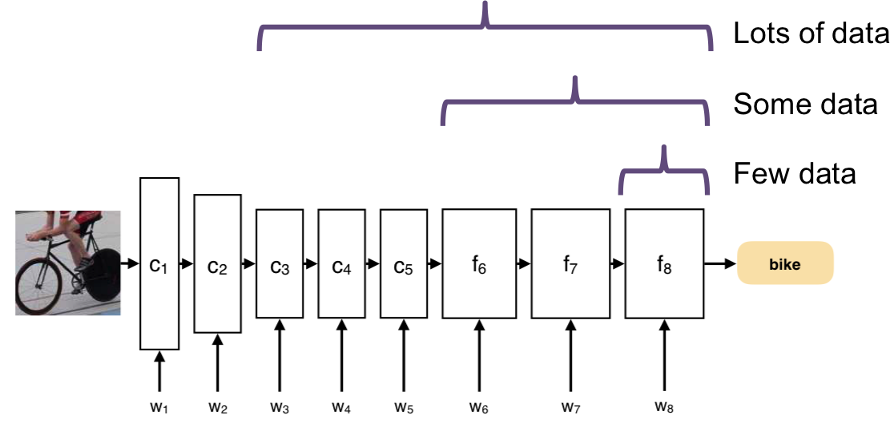
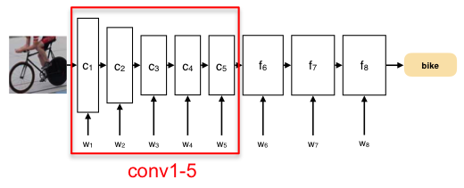
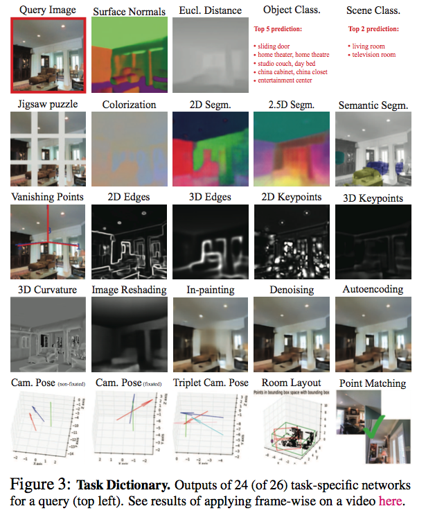
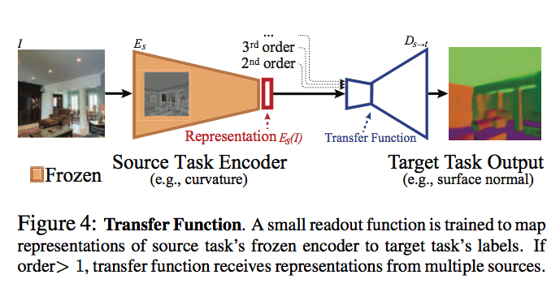
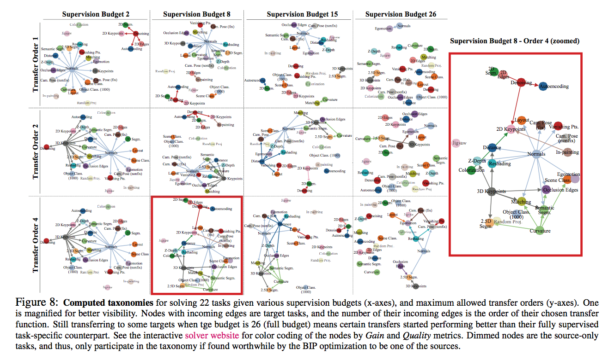

layout: true <!-- .center.footer[Andrei BURSUC | Transfer learning and self-supervised learning | @abursuc] --> .center.footer[Marc LELARGE and Andrei BURSUC | Deep Learning Do It Yourself | 18.1 Transfer Learning] --- class: center, middle, title-slide count: false ## Transfer Learning and Self-Supervised Learning # 18.1 Transfer Learning <br/> <br/> .bold[Andrei Bursuc ] <br/> url: https://dataflowr.github.io/website/ .citation[ With slides from A. Karpathy, F. Fleuret, G. Louppe, C. Ollion, O. Grisel, Y. Avrithis ...] --- class: middle, center # Outline ## Transfer learning ## Off-the shelf networks ## Fine-tuning ## (Task) transfer learning ## Multi-task learning ## Domain adaptation ## Self-supervised learning --- class: middle, center # Transfer Learning --- class: middle # Transfer learning - Assume two datasets $S$ and $T$ - Dataset $S$ is fully annotated, plenty of images and we can train a model $CNN_S$ on it - Dataset $T$ is not as much annotated and/or with fewer images + annotations of $T$ do not necessarily overlap with $S$ - We can use the model $CNN_S$ to learn a better $CNN_T$ - This is transfer learning --- class: middle # Transfer learning - Even if our dataset $T$ is not large, we can train a CNN for it - Pre-train a CNN on the dataset $S$ - The we can do: + fine-tuning + use CNN as feature extractor --- class: middle, center .Q[.big[Why using a pre-trained CNN (.italic[off-the-shelf]) would be a good idea?]] --- # Image ranking by CNN features .center.width-100[] - $3$-chanel RGB input, $224 \times 224$ - AlexNet pre-trained on ImageNet for classification .citation[A. Krizhevksy et al., Imagenet Classification with Deep Convolutional Neural Networks, NIPS 2012] --- count: false # Image ranking by CNN features .center.width-100[] - $3$-chanel RGB input, $224 \times 224$ - AlexNet pre-trained on ImageNet for classification - last fully connected layer ($fc\_6$): _global descriptor_ dimension $k=4096$ .citation[A. Krizhevksy et al., Imagenet Classification with Deep Convolutional Neural Networks, NIPS 2012] --- # VGG-16 .center.width-60[] .citation[K. Simonyan and A. Zisserman, Very deep convolutional networks for large-scale image recognition, NIPS 2014] --- # VGG-16 ```md Activation maps Parameters INPUT: [224x224x3] = 150K 0 CONV3-64: [224x224x64] = 3.2M (3x3x3)x64 = 1,728 CONV3-64: [224x224x64] = 3.2M (3x3x64)x64 = 36,864 POOL2: [112x112x64] = 800K 0 CONV3-128: [112x112x128] = 1.6M (3x3x64)x128 = 73,728 CONV3-128: [112x112x128] = 1.6M (3x3x128)x128 = 147,456 POOL2: [56x56x128] = 400K 0 CONV3-256: [56x56x256] = 800K (3x3x128)x256 = 294,912 CONV3-256: [56x56x256] = 800K (3x3x256)x256 = 589,824 CONV3-256: [56x56x256] = 800K (3x3x256)x256 = 589,824 POOL2: [28x28x256] = 200K 0 CONV3-512: [28x28x512] = 400K (3x3x256)x512 = 1,179,648 CONV3-512: [28x28x512] = 400K (3x3x512)x512 = 2,359,296 CONV3-512: [28x28x512] = 400K (3x3x512)x512 = 2,359,296 POOL2: [14x14x512] = 100K 0 CONV3-512: [14x14x512] = 100K (3x3x512)x512 = 2,359,296 CONV3-512: [14x14x512] = 100K (3x3x512)x512 = 2,359,296 CONV3-512: [14x14x512] = 100K (3x3x512)x512 = 2,359,296 POOL2: [7x7x512] = 25K 0 FC: [1x1x4096] = 4096 7x7x512x4096 = 102,760,448 FC: [1x1x4096] = 4096 4096x4096 = 16,777,216 FC: [1x1x1000] = 1000 4096x1000 = 4,096,000 TOTAL activations: 24M x 4 bytes ~= 93MB / image (x2 for backward) TOTAL parameters: 138M x 4 bytes ~= 552MB (x2 for plain SGD, x4 for Adam) ``` .credit[Slide credit: C. Ollion & O. Grisel] .citation[K. Simonyan and A. Zisserman, Very deep convolutional networks for large-scale image recognition, NIPS 2014] --- count: false # VGG-16 ```md Activation maps Parameters INPUT: [224x224x3] = 150K 0 CONV3-64: [224x224x64] = 3.2M (3x3x3)x64 = 1,728 CONV3-64: [224x224x64] = 3.2M (3x3x64)x64 = 36,864 POOL2: [112x112x64] = 800K 0 CONV3-128: [112x112x128] = 1.6M (3x3x64)x128 = 73,728 CONV3-128: [112x112x128] = 1.6M (3x3x128)x128 = 147,456 POOL2: [56x56x128] = 400K 0 CONV3-256: [56x56x256] = 800K (3x3x128)x256 = 294,912 CONV3-256: [56x56x256] = 800K (3x3x256)x256 = 589,824 CONV3-256: [56x56x256] = 800K (3x3x256)x256 = 589,824 POOL2: [28x28x256] = 200K 0 CONV3-512: [28x28x512] = 400K (3x3x256)x512 = 1,179,648 CONV3-512: [28x28x512] = 400K (3x3x512)x512 = 2,359,296 CONV3-512: [28x28x512] = 400K (3x3x512)x512 = 2,359,296 POOL2: [14x14x512] = 100K 0 CONV3-512: [14x14x512] = 100K (3x3x512)x512 = 2,359,296 CONV3-512: [14x14x512] = 100K (3x3x512)x512 = 2,359,296 CONV3-512: [14x14x512] = 100K (3x3x512)x512 = 2,359,296 POOL2: [7x7x512] = 25K 0 FC: [1x1x4096] = 4096 7x7x512x4096 = 102,760,448 *FC: [1x1x4096] = 4096 4096x4096 = 16,777,216 FC: [1x1x1000] = 1000 4096x1000 = 4,096,000 TOTAL activations: 24M x 4 bytes ~= 93MB / image (x2 for backward) TOTAL parameters: 138M x 4 bytes ~= 552MB (x2 for plain SGD, x4 for Adam) ``` .credit[Slide credit: C. Ollion & O. Grisel] .citation[K. Simonyan and A. Zisserman, Very deep convolutional networks for large-scale image recognition, NIPS 2014] --- # Image ranking by CNN features .center.width-70[] - query images .citation[A. Krizhevksy et al., Imagenet Classification with Deep Convolutional Neural Networks, NIPS 2012] --- count: false # Image ranking by CNN features .center.width-70[] - query images : nearest neighbors in ImageNet according to Euclidean distance .citation[A. Krizhevksy et al., Imagenet Classification with Deep Convolutional Neural Networks, NIPS 2012] --- # Sampling information from feature maps .center.width-90[] - VGG-16 last convolutional layer, $k=512$ .citation[G. Tolias et al., Particular object retrieval with integral max-pooling, ICLR 2016] --- count: false # Sampling information from feature maps .center.width-90[] - VGG-16 last convolutional layer, $k=512$ - global spatial max-pooling/sum .citation[G. Tolias et al., Particular object retrieval with integral max-pooling, ICLR 2016] --- count: false # Sampling information from feature maps .center.width-90[] - VGG-16 last convolutional layer, $k=512$ - global spatial max-pooling/sum - $\ell\_2$ normalization, PCA-whitening, $\ell\_2$ normalization - _MAC_: maximum activation from convolutions .citation[G. Tolias et al., Particular object retrieval with integral max-pooling, ICLR 2016] --- count: false # VGG-16 ```md Activation maps Parameters INPUT: [224x224x3] = 150K 0 CONV3-64: [224x224x64] = 3.2M (3x3x3)x64 = 1,728 CONV3-64: [224x224x64] = 3.2M (3x3x64)x64 = 36,864 POOL2: [112x112x64] = 800K 0 CONV3-128: [112x112x128] = 1.6M (3x3x64)x128 = 73,728 CONV3-128: [112x112x128] = 1.6M (3x3x128)x128 = 147,456 POOL2: [56x56x128] = 400K 0 CONV3-256: [56x56x256] = 800K (3x3x128)x256 = 294,912 CONV3-256: [56x56x256] = 800K (3x3x256)x256 = 589,824 CONV3-256: [56x56x256] = 800K (3x3x256)x256 = 589,824 POOL2: [28x28x256] = 200K 0 CONV3-512: [28x28x512] = 400K (3x3x256)x512 = 1,179,648 CONV3-512: [28x28x512] = 400K (3x3x512)x512 = 2,359,296 CONV3-512: [28x28x512] = 400K (3x3x512)x512 = 2,359,296 POOL2: [14x14x512] = 100K 0 CONV3-512: [14x14x512] = 100K (3x3x512)x512 = 2,359,296 CONV3-512: [14x14x512] = 100K (3x3x512)x512 = 2,359,296 CONV3-512: [14x14x512] = 100K (3x3x512)x512 = 2,359,296 *POOL2: [7x7x512] = 25K 0 FC: [1x1x4096] = 4096 7x7x512x4096 = 102,760,448 FC: [1x1x4096] = 4096 4096x4096 = 16,777,216 FC: [1x1x1000] = 1000 4096x1000 = 4,096,000 TOTAL activations: 24M x 4 bytes ~= 93MB / image (x2 for backward) TOTAL parameters: 138M x 4 bytes ~= 552MB (x2 for plain SGD, x4 for Adam) ``` .credit[Slide credit: C. Ollion & O. Grisel] .citation[K. Simonyan and A. Zisserman, Very deep convolutional networks for large-scale image recognition, NIPS 2014] --- # Global max-pooling: matching .center.width-50[] - receptive fields of 5 components of MAC vectors that contribute most to image similarity .citation[G. Tolias et al., Particular object retrieval with integral max-pooling, ICLR 2016] --- # Global max-pooling: matching .center.width-90[] - receptive fields of 5 components of MAC vectors that contribute most to image similarity .citation[G. Tolias et al., Particular object retrieval with integral max-pooling, ICLR 2016] --- # Global max-pooling: matching .center.width-60[] - receptive fields of 5 components of MAC vectors that contribute most to image similarity .citation[G. Tolias et al., Particular object retrieval with integral max-pooling, ICLR 2016] --- # Regional max-pooling (R-MAC) .center.width-90[] - VGG-16 last convolutional layer, $k=512$ - fixed mulitscale overlapping regions .citation[G. Tolias et al., Particular object retrieval with integral max-pooling, ICLR 2016] --- count: false # Regional max-pooling (R-MAC) .center.width-90[] - VGG-16 last convolutional layer, $k=512$ - fixed mulitscale overlapping regions, spatial _max_-pooling .citation[G. Tolias et al., Particular object retrieval with integral max-pooling, ICLR 2016] --- count: false # Regional max-pooling (R-MAC) .center.width-90[] - VGG-16 last convolutional layer, $k=512$ - fixed mulitscale overlapping regions, spatial _max_-pooling - $\ell\_2$ normalization, PCA-whitening, $\ell\_2$ normalization .citation[G. Tolias et al., Particular object retrieval with integral max-pooling, ICLR 2016] --- count: false # Regional max-pooling (R-MAC) .center.width-90[] - VGG-16 last convolutional layer, $k=512$ - fixed mulitscale overlapping regions, spatial _max_-pooling - $\ell\_2$ normalization, PCA-whitening, $\ell\_2$ normalization - _sum_-pooling over all descriptors, $\ell\_2$ normalization .citation[G. Tolias et al., Particular object retrieval with integral max-pooling, ICLR 2016] --- class: middle, center .Q[.big[Can we do more with a bit of training?]] --- class: middle .bigger[Training a task-specific linear classifier on top of CNN features led to SoTA or nearly-SoTA results] .center.width-70[] .citation[A. Razavian et al., CNN Features off-the-shelf: an Astounding Baseline for Recognition, arXiv 2014] --- <br/><br/><br/><br/> .center.width-60[] -- count: false ##.center[.red[2021 edit: Not quite there yet]] --- class: middle, center # Fine-tuning --- class: middle # Fine-tuning - Assume the parameters of $CNN_S$ are already a good start near our final local optimum - Use them as the initial parameters for our new CNN for the target dataset - This is a good solution when the dataset $T$ is relatively big + e.g. for Imagenet $S$ with $1\text{M}$ images, $T$ with a few thousand images --- # Fine-tuning .center[] - Depending on the size of $T$ decide which layer to freeze and which to finetune/replace - Use lower learning rate when fine-tuning: about $\frac{1}{10}$ of original learning rate + for new layers use agressive learning rate - If $S$ and $T$ are very similar,fine-tune only fully-connected layers - If datasets are different and you have enough data, fine-tune all layers --- # Selecting which layers to freeze .left-column[ <br/> .center[Visualize highly exciting patterns across layers] ] .right-column[.center[]] .reset-column[ ] .center.width-70[] .citation[M. Zeiler & R. Fergus, Visualizing and Understanding Convolutional Networks, ECCV 2014] --- # Fine-tuning a ResNet? .center.width-100[] --- count: false # Fine-tuning a ResNet? .center.width-100[] Preferably select layers to freeze main block .center.width-70[] --- class: middle, center .bigger[Selecting which layer to freeze is less of a problem nowadays.<br/> Common practice is to either *freeze entire network* or *freeze only first two blocks* (object detection) or *fine-tune entire network*.] --- class: middle .center.width-60[] .bigger[*Pre-trained networks* are the bread and butter in computer vision (at large) solutions, both academic and industrial.] .bigger[Other communities are starting to follow this practice.] --- class: middle ## .center[Pre-trained networks are the bread and butter of computer vision: <br/>_semantic segmentation_] .grid[ .kol-6-12[ .center.width-80[] .caption[SegNet] .center.width-80[] .caption[DeepLabV3] ] .kol-6-12[ .center.width-80[] .caption[U-Net] .center.width-80[] .caption[PSPNet] ] ] --- class: middle, center # (Task) Transfer learning --- class: middle # Taskonomy: Disentangling Task Transfer Learning .citation[A. Zamir et al., Taskonomy: Disentangling Task Transfer Learning, CVPR 2018] --- class: middle ## Question - Some vision tasks are more inter-related than others: + depth estimation could help surface normals estimation? + scene layout could help object detection? - for some task annotation data can be more easily obtainable than others - could we find fully computational approach for modeling the structure of the space of visual tasks? .citation[A. Zamir et al., Taskonomy: Disentangling Task Transfer Learning, CVPR 2018] --- # Task bank/dictionary .grid[ .kol-6-12[ <br/> <br/> <br/> - Task Bank + 26 semantic, 2d, 3d and other tasks - Dataset + 4M real images + each image has the GT label for all tasks - Task specific networks + 26 x ] .kol-6-12[ <!-- .center[] --> .center.width-75[] ] ] --- # Task bank/dictionary .center[<iframe width="900" height="450" src="https://www.youtube.com/embed/SUq1CiX-KzM" frameborder="0" allow="autoplay; encrypted-media" allowfullscreen></iframe>] .citation[A. Zamir et al., Taskonomy: Disentangling Task Transfer Learning, CVPR 2018] --- # Common architecture .center[] - encoder: ResNet50 - transfer function: 2 conv layers - decoder: 15 _fully convolutional_ layers / 2-3 _fully connected_ layers .citation[A. Zamir et al., Taskonomy: Disentangling Task Transfer Learning, CVPR 2018] --- # Common architecture .center[] - _full training_ (gold standard): $120k$ training, $16k$ validation, $17k$ testing - _fine-tuning_: $1 - 16k$ .citation[A. Zamir et al., Taskonomy: Disentangling Task Transfer Learning, CVPR 2018] --- # Computational model .center.width-100[] .citation[A. Zamir et al., Taskonomy: Disentangling Task Transfer Learning, CVPR 2018] --- # Computed taxonomies .center[] .citation[A. Zamir et al., Taskonomy: Disentangling Task Transfer Learning, CVPR 2018] --- class: middle, center # Multi-Task Learning (MTL) --- class: middle .center.width-75[] .credit[Image credit: A. Karpathy] --- class: middle .center.width-75[] .credit[Image credit: A. Karpathy] --- class: middle .bigger[In an autonomous vehicle there are plenty of perception tasks that need to be simultaneously adddressed.] .hidden[ .bigger[We have two options: 1. train multiple models (one for each type of labels) 2. inject all knowledge in a single model] ] --- count:false class: middle .bigger[In an autonomous vehicle there are plenty of perception tasks that need to be simultaneously adddressed.] .bigger[We have two options: 1. train multiple models (one for each task) .hidden[ 2. inject all knowledge in a single model] ] --- count:false class: middle .bigger[In an autonomous vehicle there are plenty of perception tasks that need to be simultaneously adddressed.] .bigger[We have two options: 1. train multiple models (one for each task) 2. inject all knowledge in a single model] --- count:false class: middle .bigger[In an autonomous vehicle there are plenty of perception tasks that need to be simultaneously adddressed.] .bigger[We have two options: 1. train multiple models (one for each task) 2. **inject all knowledge in a single model**] --- # Multi-Task Learning .center.width-90[] .bigger[In MTL we usually have a .italic[shared backbone] (encoder) and multiple .italic["heads" ], $1+$ for each task.] .bigger[The encoder learns useful features for all tasks, while the .italic["heads" ] are specialized.] .credit[Image credit: A. Kendall] --- # Multi-Task Learning .grid[ .kol-9-12[ .center.width-100[] ] .kol-3-12[ <br/> <br/> .bigger[$$ \mathcal{L}\_{total} = \sum\_i w\_i \mathcal{L}\_i$$] .bigger[$$ \sum\_i w\_i = 1$$] ] ] .bigger[Each task has its own loss and the total loss is a weighted combination.] .credit[Image credit: A. Kendall] --- class: middle ## .center[Multi-Task Learning in PyTorch] .grid[ .kol-6-12[ ``` class MTLNet(nn.Module): def __init__(self): super(MTLNet, self).__init__() self.encoder = nn.Sequential( nn.Linear(input_size, encoder_size), nn.ReLU() ) self.head1 = nn.Sequential( nn.Linear(encoder_size, h1_size), nn.ReLU(), nn.Linear(h1_size, output1_size) ) self.head2 = nn.Sequential( nn.Linear(encoder_size, h2_size), nn.ReLU(), nn.Linear(h2_size, output2_size) ) def forward(self, x): shared_features = self.encoder(x) out1 = self.head1(shared_features) out2 = self.head2(shared_features) return out1, out2 ``` ] .kol-6-12[ ] ] --- count: false class: middle ## .center[Multi-Task Learning in PyTorch] .grid[ .kol-6-12[ ``` class MTLNet(nn.Module): def __init__(self): super(MTLNet, self).__init__() self.encoder = nn.Sequential( nn.Linear(input_size, encoder_size), nn.ReLU() ) self.head1 = nn.Sequential( nn.Linear(encoder_size, h1_size), nn.ReLU(), nn.Linear(h1_size, output1_size) ) self.head2 = nn.Sequential( nn.Linear(encoder_size, h2_size), nn.ReLU(), nn.Linear(h2_size, output2_size) ) def forward(self, x): * shared_features = self.encoder(x) * out1 = self.head1(shared_features) * out2 = self.head2(shared_features) * return out1, out2 ``` ] .kol-6-12[ ] ] --- count: false class: middle ## .center[Multi-Task Learning in PyTorch] .grid[ .kol-6-12[ ``` class MTLNet(nn.Module): def __init__(self): super(MTLNet, self).__init__() self.encoder = nn.Sequential( nn.Linear(input_size, encoder_size), nn.ReLU() ) self.head1 = nn.Sequential( nn.Linear(encoder_size, h1_size), nn.ReLU(), nn.Linear(h1_size, output1_size) ) self.head2 = nn.Sequential( nn.Linear(encoder_size, h2_size), nn.ReLU(), nn.Linear(h2_size, output2_size) ) def forward(self, x): * shared_features = self.encoder(x) * out1 = self.head1(shared_features) * out2 = self.head2(shared_features) * return out1, out2 ``` ] .kol-6-12[ ``` for i, (x, y_task1, y_task2) in enumerate(train_loader): ... y_pred1, y_pred2 = mtl_net(x) loss1 = criterion(y_pred1, y_task1) loss2 = criterion(y_pred2, y_task2) loss = weight1 * loss1 + weight2 * loss2 optimizer.zero_grad() loss.backward() optimizer.step() ... ``` ] ] --- count: false class: middle ## .center[Multi-Task Learning in PyTorch] .grid[ .kol-6-12[ ``` class MTLNet(nn.Module): def __init__(self): super(MTLNet, self).__init__() self.encoder = nn.Sequential( nn.Linear(input_size, encoder_size), nn.ReLU() ) self.head1 = nn.Sequential( nn.Linear(encoder_size, h1_size), nn.ReLU(), nn.Linear(h1_size, output1_size) ) self.head2 = nn.Sequential( nn.Linear(encoder_size, h2_size), nn.ReLU(), nn.Linear(h2_size, output2_size) ) def forward(self, x): * shared_features = self.encoder(x) * out1 = self.head1(shared_features) * out2 = self.head2(shared_features) * return out1, out2 ``` ] .kol-6-12[ ``` for i, (x, y_task1, y_task2) in enumerate(train_loader): ... y_pred1, y_pred2 = mtl_net(x) * loss1 = criterion(y_pred1, y_task1) * loss2 = criterion(y_pred2, y_task2) * loss = weight1 * loss1 + weight2 * loss2 optimizer.zero_grad() * loss.backward() optimizer.step() ... ``` ] ] --- class: middle .grid[ .kol-6-12[ .center.width-80[] ] .kol-6-12[ <br/><br/> <br/><br/> <br/><br/> .bigger[ - Usually there are $2-5$ tasks per network - In some cases, on autonomous vehicles you can have up to $50$ tasks per network. ] ] ] .credit[Image credit: A. Karpathy] --- class:middle .big.green[Pros] .bigger[ - highly practical solution - shared encoder can be shared among many tasks - MTL can lead to better regularization .cites[[Caruana (1993)]] ] .hidden[ .big.red[Cons] .bigger[ - balancing difficulties and impact of each task is non-trivial: - normalize gradients from all heads .cites[[Chen et al. (2018)]] - learn per task weights .cites[[Kendall et al. (2018), Leang et al. (2020)]] - learn a scheduling for training heads .cites[[Leang et al. (2020)]] ] ] .citation[R. Caruana, Multitask learning: A knowledge-based source of inductive bias, ICML 1993 .hidden[<br/> Z. Chen et al., Gradnorm: Gradient normalization for adaptive loss balancing in deep multitask networks, ICML 2018. <br/> A. Kendall et al., Multi-task learning using uncertainty to weigh losses for scene geometry and semantics, CVPR 2018 <br/>I. Leang, Dynamic Task Weighting Methods for Multi-task Networks in Autonomous Driving Systems, ITSC 2020]] --- count: false class:middle .big.green[Pros] .bigger[ - highly practical solution - shared encoder can be shared among many tasks - MTL can lead to better regularization .cites[[Caruana (1993)]] ] .big.red[Cons] .bigger[ - balancing difficulties and impact of each task is non-trivial: - normalize gradients from all heads .cites[[Chen et al. (2018)]] - learn per task weights .cites[[Kendall et al. (2018), Leang et al. (2020)]] - learn a scheduling for training heads .cites[[Leang et al. (2020)]] ] .citation[R. Caruana, Multitask learning: A knowledge-based source of inductive bias, ICML 1993 <br/> Z. Chen et al., Gradnorm: Gradient normalization for adaptive loss balancing in deep multitask networks, ICML 2018. <br/> A. Kendall et al., Multi-task learning using uncertainty to weigh losses for scene geometry and semantics, CVPR 2018 <br/>I. Leang, Dynamic Task Weighting Methods for Multi-task Networks in Autonomous Driving Systems, ITSC 2020] --- class: middle, center # Domain Adaptation --- # Example: Internet images $\rightarrow$ webcam .center.width-70[] --- # Example: (semi-)synthetic $\rightarrow$ real .left-column[ .center.width-65[] ] .right-column[ .center.width-65[] ] --- # Domain-adversarial networks .center.width-90[] .citation[Y. Ganin et al., Domain-Adversarial Training of Neural Networks, JMLR 2016] --- # Domain-adversarial networks .center.width-60[] - build a network - train .green[feature extractor] + .blue[class predictor] on source data - train .green[feature extractor] + .pink[domain classifier] on source+target data - use .green[feature extractor] + .blue[class predictor] at test time .citation[Y. Ganin et al., Domain-Adversarial Training of Neural Networks, JMLR 2016] --- # Domain-adversarial networks .center.width-100[] - build a network - train .green[feature extractor] + .blue[class predictor] on source data - train .green[feature extractor] + .pink[domain classifier] on source+target data - use .green[feature extractor] + .blue[class predictor] at test time .citation[Y. Ganin et al., Domain-Adversarial Training of Neural Networks, JMLR 2016] --- # Large-gap domain adaptation Using video games to generate training data .center.width-70[] .caption[GTA V] .citation[S. Richter et al., Playing for Data: Ground Truth from Computer Games, ECCV 2016] --- # Unsupervised domain adaptation .center.width-50[] .caption[Directly testing on the target data is not quite optimal] Predictions on target domain have higher entropy $\longrightarrow$ .italic[*what if we just minimize entropy during training?*] .citation[T. Vu et al., ADVENT: Adversarial Entropy Minimization for Domain Adaptation in Semantic Segmentation, CVPR 2019] --- # Unsupervised domain adaptation .center.width-90[] .caption[ADVENT - Adversarial Entropy Minimization for Domain Adaptation] If you squint a bit you might recognize a form of .italic[multi-task learning] here. .citation[T. Vu et al., ADVENT: Adversarial Entropy Minimization for Domain Adaptation in Semantic Segmentation, CVPR 2019] --- # Unsupervised domain adaptation .center.width-60[] .caption[GAP w.r.t. oracle, .italic[i.e.] when training on the target data. <br/> Top: _VGG-16_ encoder; bottom _ResNet-101_ encoder.] .citation[T. Vu et al., ADVENT: Adversarial Entropy Minimization for Domain Adaptation in Semantic Segmentation, CVPR 2019] --- # Unsupervised domain adaptation .center.width-80[] .caption[Semantic segmentation: from GTA V $\rightarrow$ Cityscapes] .citation[T. Vu et al., ADVENT: Adversarial Entropy Minimization for Domain Adaptation in Semantic Segmentation, CVPR 2019] --- # Unsupervised domain adaptation .center.width-80[] .caption[Object detection: from Cityscapes $\rightarrow$ Foggy Cityscapes (synthetic fog)] .citation[T. Vu et al., ADVENT: Adversarial Entropy Minimization for Domain Adaptation in Semantic Segmentation, CVPR 2019] --- # Also domain adaptation Instead of learning domain invariant features, we can modify the synthetic data to "look" more realistic. .center.width-60[] .citation[A. Srivastava et al., Learning from Simulated and Unsupervised Images through Adversarial Training, CVPR 2017] --- # Also domain adaptation .center.width-100[] .citation[A. Srivastava et al., Learning from Simulated and Unsupervised Images through Adversarial Training, CVPR 2017] --- count: false # Also domain adaptation .center.width-100[] .center.width-70[] .citation[A. Srivastava et al., Learning from Simulated and Unsupervised Images through Adversarial Training, CVPR 2017] --- # Transfer learning Many flavors of transfer learning .center.width-75[] --- class: middle, center # Outline ## Transfer learning ## Off-the shelf networks ## Fine-tuning ## (Task) transfer learning ## Multi-task learning ## Domain adaptation ## Self-supervised learning --- class: end-slide, center count: false The end.